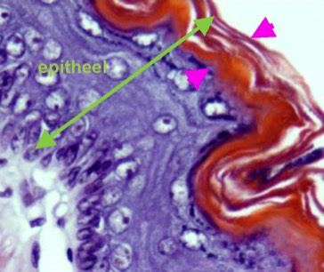
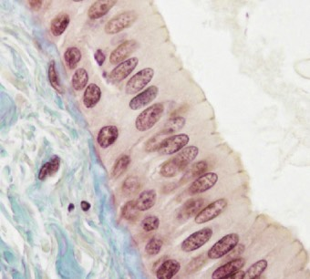

Meerlagige epithelen (vooral plaveiselepithelen) vind je voornamelijk terug op plaatsen waar veel wrijving plaatsvindt. Afhankelijk van de mate van wrijving zullen de bovenste cellagen dood (verhoornd) of levend (onverhoornd) zijn.
- Bij onverhoornd (onverhoornend, deze termen worden door elkaar gebruikt) epitheel zijn de cellen in de meest oppervlakkige cellagen nog steeds levend. Daarom zijn alle organellen, dus ook de celkernen, nog terug te vinden in deze meest oppervlakkige cellaag.
- Bij verhoornd epitheel zijn de bovenste cellagen dood en vind je dus geen celkernen meer terug. Deze verhoornde laag kleurt fel aan in de meeste lichtmicroscopische preparaten waarbij een overzichtskleuring werd gebruikt.
Kijk na of er kernen zitten in de bovenste cellagen van een meerlagig epitheel.


In de bovenste cellagen (tegen de buitenwereld aan, hier tussen de roze pijltjes) vind je geen celkernen terug. Deze bovenste cellaag is op dit preparaat fel oranje gekleurd.
Dit is een meerlagig verhoornd plaveiselepitheel.
Dit is een meerlagig verhoornd plaveiselepitheel.
Hier zie je een tweelagig epitheel, waarbij de bovenste laag cellen een ovale kern heeft en dus uit cilindrische cellen bestaat, terwijl de laag die rust op de basaalmembraan uit kubische cellen bestaat. Dit epitheel bezit zeker geen hoornlaag.
Het is een tweelagig cilindrisch epitheel.
Het is een tweelagig cilindrisch epitheel.
Vordering zelfstudie bedekkende epithelen: